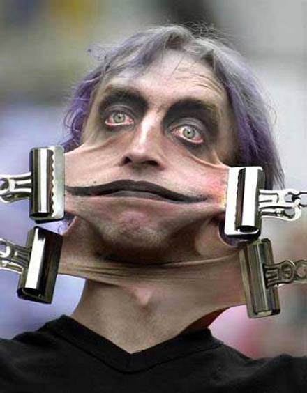

Ο άκακος Γιωργάκης, ο Γιωργάκης ο ηλίθιος που έπεφτε από το ποδήλατο, ο φουκαραδάκος που είναι σαν ασφαλιστής με το αρμάνι του, ο Γιωργάκης που έκανε γκάφες, αυτός λοιπόν έγινε τελικά ο μακελάρης μας, ο πιό αδυσώπητος, ανελέητος, απάνθρωπος και ακροδεξιός πρωθυπουργός που ζήσαμε τα τελευταία τριάντα χρόνια. Ξεκίνησε με τα παραμύθια της χαλιμάς (αύξηση των μισθών, πράσινη ανάπτυξη, κ.λ.π.) και με κατεύθυνσή το πρότυπο της Δανίας, τελικά μας παρέδωσε ολοταχώς στα δόντια του ΔΝΤ που μας ξεκοκαλίζει κανονικά (έτσι και αλλιώς αυτό κάνει από όπου κι αν πέρασε). Οι δικοί μας πολιτικοί τόσα χρόνια έφαγαν τα λύσσακά τους, σε ένα διεφθαρμένο σύστημα που δημιούργησε η αρρωστημένη κατάσταση της εναλλαγής των δύο οικογενειών για πάνω από πενήντα χρόνια. Όμως το μεγάλο φαγοπότι πέφτει τώρα. Τώρα όλοι αισθανόμαστε τα δόντια τους να μαδάνε τα κόκαλα μας, τώρα μας τρώνε το μεροκάματο, τις συντάξεις, κλείνουν τα νοσοκομεία, τα σχολεία και ξεπουλάνε την περιουσία μας (ΔΕΗ, ΟΤΕ, ΟΣΕ, λιμάνια, πρώην ανατολικό αεροδρόμιο, κ.λ.π.). Η κατεύθυνση είναι ξεκάθαρη. Ακροδεξιά πολιτική με πιο ακριβό ρεύμα στους φτωχούς και πιο φτηνό στους πλούσιους, με επίθεση στους ασθενέστερους και στους απροστάτευτους συνταξιούχους και με προνόμια και ξεσάλωμα στους εργοδότες και στους πλούσιους, έτσι ακριβώς γίνανε οι παραγκουπόλεις στον τρίτο κόσμο. Μεταφέροντας τις ευθύνες για το απόλυτο μπάχαλο στην Τρόικα που έτσι και αλλιώς αυτοί την φέρανε. Και βέβαια με την Ουάσινγκτον και την Μέρκελ να μας δίνουν τα συχαρίκια τους....
Ωστόσο η πολιτική του διαίρει και βασίλευε, έχει δημιουργήσει σύγχυση και απόγνωση στον κόσμο, στρέφοντας την μια ομάδα ενάντια στην άλλη (μας έβαλαν να καρφώνουμε ο ένας τον άλλο) δημιουργώντας μια κατακερματισμένη κοινωνία, κατόρθωσαν μέσα σε ένα χρόνο να βυθίσουν τον κόσμο σε απελπισία, κατάθλιψη, σύγχυση, και φτώχεια. Με ιδιωτικοποιήσεις, ανασφάλεια, ελαστικoποίηση εργασιακών σχέσεων, μαζικές απολύσεις, στέρηση της αποζημίωσης, ανεργία σε απίστευτα ύψη (που έχει στείλει πολύ κόσμο στα ψυχοφάρμακα ή και στην αυτοκτονία ακόμα), αυξήσεις σε τρόφιμα, καύσιμα και λογαριασμούς (που σιγά σιγά θα μας στείλουν όλους στους σκουπιδοτενεκέδες να ψάχνουμε για φαγητό), κλείσιμο σχολείων, κλείσιμο νοσοκομείων, μισθούς κάτω από τα όρια της φτώχειας, δόμηση σε περιοχές Natura, και που έπονται και άλλα ακόμα χειρότερα, τόση φρίκη που κανονικά θα έπρεπε να έχει προκαλέσει μεγάλη εξέγερση (Όπως έγινε στην Αίγυπτο και στην Τυνησία). Πράγματα απίστευτα, πράγματα που αν μας τα έλεγαν πριν από ένα χρόνο θα λέγαμε ότι είναι επιστημονική φαντασία και ότι αποκλείεται εμείς να τα δεχτούμε . Όμως την ανελέητη προπαγάνδα που η δικτατορία του 70 ωχριά μπροστά της, και την ύπνωση και λιποθυμία της κοινωνίας, όλη τη βρώμικη δουλειά την έχουν αναλάβει (με το αζημίωτο), τα κανάλια και τα ΜΜΕ. Οι καναλάρχες βλέπουν τους λογαριασμούς τους στις τράπεζες να φουσκώνουν, παίρνουν τα δημόσια έργα, τις προμήθειες και τις άδειες για τα φρουτάκια (που θεωρείται και το καλύτερο deal από την εποχή των αδειών της κινητής τηλεφωνίας).Έτσι και αλλιώς η δημοκρατία έχει καταργηθεί, και αυτός είναι ο τρόπος που κυβερνάνε τα απολυταρχικά καθεστώτα : “Στόχος του νέου νομοσχεδίου (για τα φρουτάκια), είναι η προστασία του δημοσίου συμφέροντος και ειδικά των νέων, με την ένταξη και παρακολούθηση σε νόμιμο πλέον πλαίσιο των διεξαγόμενων παιγνίων”. Υπογράφει δημοσιογράφος του “Έθνους” μια και μέσα στη λοβιτούρα είναι και ο Μπόμπολας...Οι δημοσιογράφοι του SKY που φυτεύει δεντράκια:),(Τσαπανίδου & Παπαδημητρίου), τάσσονται ανοικτά υπέρ του νομοσχεδίου για την οικοδόμηση των ζωνών ειδικής προστασίας λόγω της σπάνιας βιοποικιλότητας “Natura”....
Και μη ξεχνάμε ότι ο Τυνήσιος αρχικοπρίτης που επέβαλε αυστηρότατη λιτότητα, έφυγε με 1,5 τόνο χρυσό, και ο Μουμπάρακ που επίσης επέβαλε αυστηρότατη λιτότητα στον ήδη εξαθλιωμένο Αιγυπτιακό λαό, έχει περιουσία 70 δισεκατομμυρίων δολαρίων !!!!!!!!
ΑΡΚΕΤΑ ΡΕ ΜΑΛΑΚΕΣ, ΑΡΚΕΤΑ
| |
10 σ χ ό λ ι α :
|
Τώρα με την κρίση ανέβηκε και το ποσοστό διαφήμισης του ΟΠΑΠ. Απολαύστε αισθητική ΟΠΑΠ:
youtube.com/watch?v=PXWNhCK-NWU |
|
Αυτή η κυβέρνηση πήρε τη σωτηρία της χώρας στα χέρια της.
Γ. Παπανδρέου 9/02/11
Δεν είναι ώρα για εγωισμούς ούτε ατομικούς ούτε συντεχνιακούς.
Γ. Παπανδρέου προς τους ανέργους 9/02/11
|
|
Ο Θόδωρος Πάγκαλος και η Τρόικα στην βάση της οικονομικής πυραμίδας της Ελλάδας!!!
img545.imageshack.us/i/37690790.jpg/ |
|
"please, ain't this enough?"
and the ugly woman screamed, "NO!"
|
|
Μας δουλεύουνε ΧΟΝΤΡΟ γαζί.... |
|
na toys vgaloyme mesa apta meeting......ar |
|
Ο σοφος λαος λεει "θα γυρισει ο τροχος, θα γαμησει και ο φτωχος"
αυτο που δεν ξερουν οι βολεμενοι ειναι οτι οταν γαμαει ο φτωχος, γαμαει ασχημα...
|
|
O θερισμός και ο τρυγητός του κόσμου
14Kοίταξα, κατόπιν, και είδα μια νεφέλη λευκή! Kαι καθισμένος πάνω στη νεφέλη κάποιος όμοιος με γιο ανθρώπου. Στο κεφάλι του φορούσε ένα χρυσό στεφάνι και στο χέρι του κρατούσε ένα δρεπάνι κοφτερό. 15Bγήκε κι ένας άλλος άγγελος από το ναό φωνάζοντας δυνατά σ� αυτόν που καθόταν πάνω στη νεφέλη: �Στείλε το δρεπάνι σου και θέρισε, καθόσο ήρθε η ώρα του θερισμού, γιατί ωρίμασαν τα σπαρτά που είναι για θερισμό στη γη�. 16Kι έριξε το δρεπάνι του αυτός που καθόταν επάνω στη νεφέλη, και θέρισε τη γη.
17Bγήκε, τότε, ένας άλλος άγγελος από το ναό, που είναι στον ουρανό, έχοντας κι αυτός ένα δρεπάνι. 18Eπίσης βγήκε κι ένας άλλος άγγελος από το θυσιαστήριο, που είχε εξουσία πάνω στη φωτιά, και με φωνή δυνατή φώναξε σ� εκείνον που κρατούσε το κοφτερό δρεπάνι: �Στείλε το δρεπάνι σου το κοφτερό και τρύγησε τα τσαμπιά από το αμπέλι της γης, γιατί ωρίμασαν τα σταφύλια του�. 19Έριξε, τότε, ο άγγελος το δρεπάνι του στη γη και τρύγησε το αμπέλι της γης. Kι έβαλε τα σταφύλια στο μεγάλο πατητήρι του θυμού του Θεού, 20και πατήθηκαν στο πατητήρι, έξω από την πόλη, και βγήκε αίμα από το πατητήρι μέχρι τα χαλινάρια των αλόγων κι έτρεξε σε μια απόσταση χιλίων εξακοσίων σταδίων!
πόσα τρισσεκατομμύρια τρυπάκια μας χωρίζουν από τον Ιωάννη κι όμως πάλι αίμα θέλει ο θεός να στάζει στις πόλεις των φτωχών. |
|
Μία είναι η λύση στην κρίση, το come back του Κώστα Καραμανλή. |
|
Ουτε το αρκετα φτανει πια.
Ουτε παραιτησεις μας αρκουν.
Ουτε'δικες'.
Ουτε φυγες-φυγαδευσεις.
Ουτε εξοριες.
Ουτε μπαλωματα-διορθωματα.
Ουτε 'επιμικυνσεις'.
Ουτε υποσχεσεις.
Ουτε 'αισιοδοξια'.
Ουτε οι πατριδες τους.
Ουτε χρονοδιαγραμματα.
Ουτε αυταπατες.
Ουτε συγνωμες.
Μονο επιθεση και δραση παντου
μεχρι να εξατμιστουν και εξαφανιστουν. |
νέο σχόλιο:
|
34 readers online
|